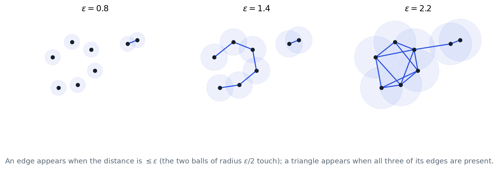
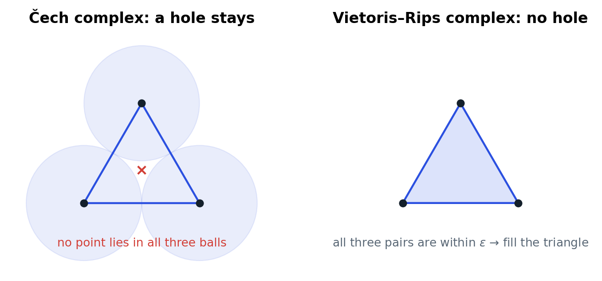
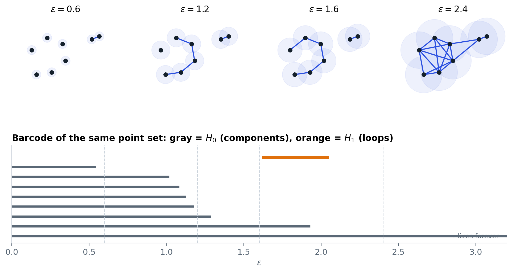
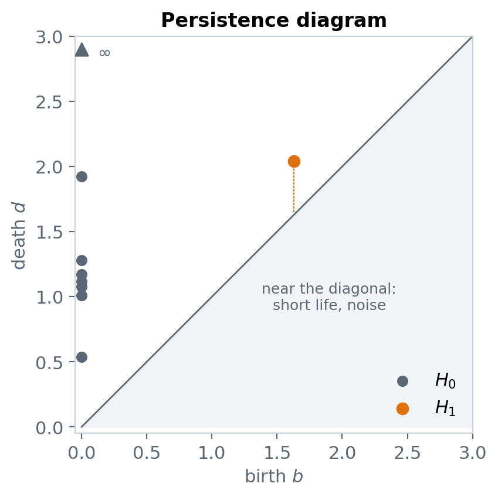
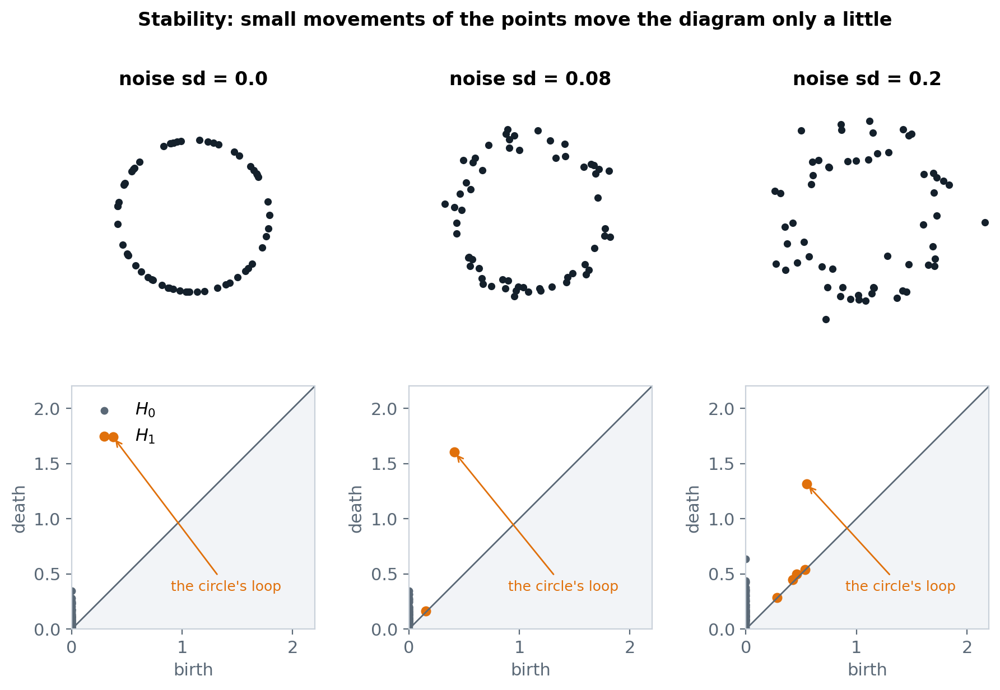
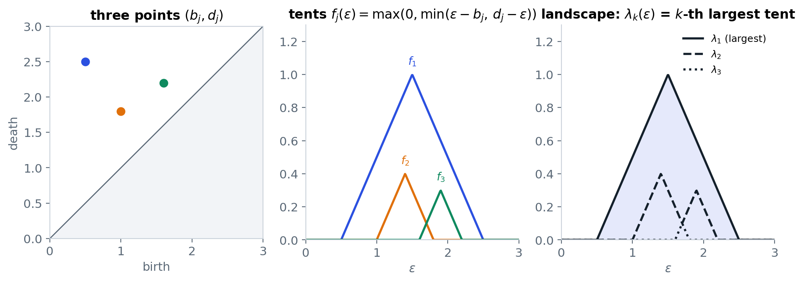
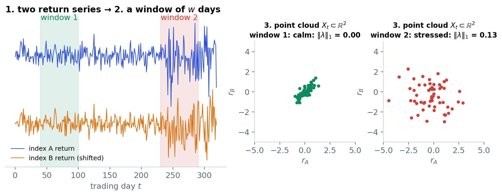

From a point cloud to a barcode: Čech and Vietoris–Rips complexes, filtrations, persistent homology, persistence diagrams,
the structure and stability theorems, persistence landscapes and their $L^p$ norms, and how to turn a time series into point clouds.
Statements only, no proofs. Every figure was drawn for this note; the diagrams in the figures were computed with ripser.
Builds on study note 1 (simplicial complexes, chains, $H_n$, Betti numbers, maps induced by inclusions).
Choi Sejin · Sogang University, Mathematics · October 2026
0. The problem of scale
A finite set of points has no interesting homology by itself: $b_0$ = number of points, everything else $0$.
To see a shape we must connect nearby points. But "nearby" depends on a scale $\epsilon$, and no single $\epsilon$ is right.
Persistent homology looks at all scales at once and keeps the features that live for a long range of $\epsilon$.
Figure 1. The pipeline used in the finance application (Gidea & Katz 2018). Sections 1–6 cover the middle boxes; Section 8 covers the first ones.
1. Point clouds and the two standard complexes
Point cloud. A finite set $X=\{x_1,\dots,x_n\}$ in a metric space, usually $\mathbb{R}^d$ with the Euclidean distance
$d(x,y)=\|x-y\|_2$.
Čech complex. Put a closed ball of radius $r$ around every point. $\check C_r(X)$ contains the simplex
$[x_{i_0},\dots,x_{i_k}]$ exactly when the $k+1$ balls have a common point:
$\bigcap_j B(x_{i_j},r)\ne\emptyset$.
Nerve theorem (statement). The union of the balls $\bigcup_i B(x_i,r)$ is homotopy equivalent to $\check C_r(X)$.
So the Čech complex has exactly the homology of the "thickened" point cloud. This is the theoretical justification for building complexes from balls.
Vietoris–Rips complex. $R_\epsilon(X)$ contains $[x_{i_0},\dots,x_{i_k}]$ exactly when all pairwise distances are small:
$$[x_{i_0},\dots,x_{i_k}]\in R_\epsilon(X)\iff d(x_{i_j},x_{i_l})\le\epsilon\ \text{ for all } j,l .$$
Equivalently: draw the graph with an edge between any two points at distance $\le\epsilon$, then fill in every clique (every set of
mutually connected vertices). $R_\epsilon(X)$ is determined by the distance matrix alone.

Figure 2. The Rips complex of eight points at three scales. With the convention "edge if $d\le\epsilon$", the picture to keep in mind is balls of radius $\epsilon/2$:
an edge appears when two balls touch.
Conventions differ between books and software. Some authors write $R_\epsilon$ for "balls of radius $\epsilon$ overlap",
i.e. $d\le2\epsilon$; others, and ripser, use the edge length $d\le\epsilon$ (the diameter of the simplex is $\le\epsilon$). Some use $<$ instead of $\le$.
The barcode is the same up to a rescaling of the axis, but when you compare numbers across papers, check the convention first. This note and the
notebooks use ripser's convention: an edge of length $\le\epsilon$ is present at scale $\epsilon$.

Figure 3. Three points, each pair at distance exactly $\epsilon$. The three balls of radius $\epsilon/2$ have no common point, so the Čech complex at this
scale is a hollow triangle ($b_1=1$), while the Rips complex fills it ($b_1=0$).
Rips versus Čech (sandwich). With the conventions above,
$$\check C_{\epsilon/2}(X)\;\subseteq\;R_\epsilon(X)\;\subseteq\;\check C_{\epsilon}(X).$$
The first inclusion: if balls of radius $\epsilon/2$ meet pairwise, the pairwise distances are $\le\epsilon$. The second: if all pairwise distances
are $\le\epsilon$, then any one vertex lies in all the balls of radius $\epsilon$. So Rips can be wrong about a hole at one scale (Figure 3),
but never by more than a factor $2$ in scale. Rips is used in practice because it needs only distances and is far cheaper to build.
2. Filtrations
Definition. A filtration of a simplicial complex $K$ is a nested sequence of subcomplexes
$$\emptyset=K_0\subseteq K_1\subseteq\cdots\subseteq K_m=K .$$
For a point cloud, the Rips complexes give one: if $\epsilon\le\epsilon'$ then $R_\epsilon(X)\subseteq R_{\epsilon'}(X)$.
Every simplex gets a filtration value, the first $\epsilon$ at which it appears; for Rips this is the longest edge of the simplex.
Each inclusion $K_i\hookrightarrow K_j$ ($i\le j$) is a simplicial map, so by study note 1, Section 8, it induces a linear map on homology
$$\iota^{i,j}_*:H_n(K_i)\longrightarrow H_n(K_j),\qquad [z]\mapsto[z].$$
These maps compose: $\iota^{j,k}_*\circ\iota^{i,j}_*=\iota^{i,k}_*$. The whole sequence of vector spaces and maps
$$H_n(K_0)\to H_n(K_1)\to\cdots\to H_n(K_m)$$
is called a persistence module.
3. Persistent homology, birth and death
Definition. The $(i,j)$-persistent homology group is the image
$$H_n^{i,j}=\operatorname{im}\big(\iota^{i,j}_*:H_n(K_i)\to H_n(K_j)\big)\subseteq H_n(K_j).$$
Its elements are the classes that already existed at step $i$ and are still non-zero at step $j$. Its dimension is the persistent Betti number
$\beta_n^{i,j}$.
Birth, death, persistence. A class $\gamma\in H_n(K_i)$ is born at $i$ if it is not in the image of
$H_n(K_{i-1})$. It dies at $j>i$ if $\iota^{i,j}_*(\gamma)$ becomes zero or merges with a class born earlier
(the elder rule: when two classes merge, the younger one dies). If it never dies, its death is $\infty$.
With filtration values $b=\epsilon_i$ and $d=\epsilon_j$, the pair $(b,d)$ is recorded and $d-b$ is the persistence (lifetime) of the class.

Figure 4. Top: the Rips filtration of Figure 2 at four scales. Bottom: its barcode. The eight $H_0$ bars start at $0$ (every point is its own
component); each time an edge joins two components one bar ends; one bar never ends. The orange $H_1$ bar is born at $\epsilon\approx1.6$ when the ring of six
points closes into a loop, and dies at $\epsilon\approx2.0$ when triangles fill the ring. The two close points on the right never make a loop.
Barcode and persistence diagram. The multiset of pairs $\{(b_j,d_j)\}$ for $H_n$ is drawn either as horizontal
intervals $[b_j,d_j)$ (the barcode) or as points in the plane above the diagonal (the persistence diagram $D_n$).
Points far from the diagonal are long-lived features; points near the diagonal are born and die almost at once.
By convention the diagram also contains every point of the diagonal with infinite multiplicity, which makes the distances of Section 6 work.

Figure 5. The persistence diagram of Figure 4. The triangle at the top marks the $H_0$ class with infinite death.
Reading $H_0$. The $H_0$ barcode of a Rips filtration is the same information as single-linkage clustering: a bar ends at the
distance where its component is absorbed by an older one. One bar always lives forever (the whole cloud is connected at large $\epsilon$); the
reduced $H_0$ drops it.
4. Why the barcode is well defined: the structure theorem
Theorem (Zomorodian–Carlsson 2005; statement). Let the coefficients be a field. A persistence module
$V_0\to V_1\to\cdots\to V_m$ of finite-dimensional vector spaces decomposes, uniquely up to order, as a direct sum of interval modules
$$I[b,d):\qquad 0\to\cdots\to0\to\underbrace{F\to F\to\cdots\to F}_{\text{steps }b,\dots,d-1}\to0\to\cdots\to0$$
(identity maps inside the interval). The intervals are exactly the bars of the barcode.
This is the reason TDA software uses field coefficients (study note 1, Section 7): over $\mathbb{Z}$ a persistence module need not split into
intervals, and "the barcode" would not be well defined. Over a field, the barcode is a complete description of the persistence module.
How it is computed. Order all simplices by filtration value (ties broken by dimension). Write the full boundary matrix
over $\mathbb{Z}/2$ with columns in that order and reduce it from left to right by adding earlier columns (column XOR) until the lowest $1$ of every
non-zero column is in a different row. A zero column $j$ means simplex $j$ creates a class (a birth); a non-zero column $j$ with lowest $1$ in
row $i$ means simplex $j$ kills the class created by simplex $i$ (the pair $(b,d)=(\epsilon_i,\epsilon_j)$). ripser does this with many shortcuts
(cohomology, implicit matrices, apparent pairs), which is why Rips persistence of a few hundred points in dimension 1 takes milliseconds.
5. Reading a diagram: signal, noise, stability

Figure 6. Sixty points on a circle with increasing noise. The one long $H_1$ bar (the circle) moves a little; the short bars near the diagonal are
sampling noise. At large noise the signal bar gets shorter and the noise bars longer, but the ordering is still clear.
Bottleneck distance. For two diagrams $D,D'$ (each including the diagonal),
$$d_B(D,D')=\inf_{\phi}\ \sup_{p\in D}\|p-\phi(p)\|_\infty ,$$
the infimum over all bijections $\phi:D\to D'$ (points may be matched to the diagonal). It is the cost of the best matching, measured by its worst pair.
Stability theorem (Cohen-Steiner, Edelsbrunner, Harer 2007; Chazal et al. 2014 for Rips; statement).
If two point clouds $X,Y$ are close in the Hausdorff distance, their Rips persistence diagrams are close:
$$d_B\big(D_n(X),D_n(Y)\big)\le 2\,d_H(X,Y),$$
where $d_H(X,Y)$ is the largest distance from a point of one cloud to the nearest point of the other.
(The factor $2$ is the price of the diameter convention; with the radius convention it is $1$.)
Stability is what makes persistence a usable statistic: small measurement noise moves the diagram only a small amount, so a bar that is much
longer than the noise level is a real feature of the data.
Rules of thumb. (1) Long bars = topology of the underlying shape; short bars = sampling noise and local irregularity.
(2) There is no universal cut-off; compare bar length with the typical distance between neighbouring points, or with bars obtained from shuffled or
simulated data. (3) In dimension $1$, a bar's birth $b$ is roughly the gap between points along the loop and its death $d$ is roughly the loop's
size (the scale at which triangles across the loop appear). A loop with few, widely spread points has small $d-b$ even if the loop is real.
6. Summaries of a diagram: persistence landscapes
A diagram is a multiset of points, which is awkward for statistics: you cannot add two diagrams or take a mean. Bubenik (2015) proposed
turning a diagram into a function, which lives in a vector space where averages, norms and confidence bands make sense.
Tent functions and landscape. For each point $(b_j,d_j)$ of the diagram define the tent
$$f_j(\epsilon)=\max\big(0,\ \min(\epsilon-b_j,\ d_j-\epsilon)\big),$$
a triangle of height $(d_j-b_j)/2$ centred at $(b_j+d_j)/2$. The $k$-th landscape function is
$$\lambda_k(\epsilon)=\text{the $k$-th largest value among } f_1(\epsilon),f_2(\epsilon),\dots \qquad (\lambda_k\equiv0 \text{ if fewer than $k$ tents}).$$
The sequence $\lambda=(\lambda_1,\lambda_2,\dots)$ is the persistence landscape. $\lambda_1\ge\lambda_2\ge\cdots\ge0$ and each $\lambda_k$ is
piecewise linear.

Figure 7. Three diagram points, their tents, and the landscape functions $\lambda_1,\lambda_2,\lambda_3$ (the first, second and third largest tent at each $\epsilon$).
$L^p$ norm of a landscape.
$$\|\lambda\|_p=\Big(\sum_{k\ge1}\int_{\mathbb{R}}|\lambda_k(\epsilon)|^p\,d\epsilon\Big)^{1/p},\qquad p=1,2,\dots$$
One number per diagram. For tents that do not overlap, it has a closed form: a single pair $(b,d)$ of lifetime $\ell=d-b$ contributes
$\int f=\ell^2/4$ to the $L^1$ sum and $\int f^2=\ell^3/12$ to the $L^2$ sum, so
$$\|\lambda\|_1=\tfrac14\sum_j\ell_j^2,\qquad \|\lambda\|_2=\Big(\tfrac1{12}\sum_j\ell_j^3\Big)^{1/2}\quad\text{(non-overlapping tents)}.$$
When tents overlap the sum over $k$ still counts every tent exactly once, so the formula remains exact: the landscape only re-labels which tent is $\lambda_1$ at each $\epsilon$. In practice we evaluate $\lambda_k$ on a grid and integrate numerically.
What the norm measures. $\|\lambda\|_1$ grows with the number of loops and, quadratically, with their lifetimes; $\|\lambda\|_2$ puts even more
weight on the longest bars. A cloud with one big persistent loop and a cloud with many tiny loops can have very different norms even if $b_1$ at some single
scale is the same. In the finance application the norm is read as "how much loop structure, at how large a scale, does this window of returns have".
Stability of landscapes (Bubenik 2015; statement). $\sup_\epsilon|\lambda_k(\epsilon)-\lambda'_k(\epsilon)|\le d_B(D,D')$ for every $k$,
and the $L^p$ norms are continuous functions of the diagram. So a small change in the data gives a small change in $\|\lambda\|_p$.
Other summaries you will meet.Betti curve $\beta_n(\epsilon)$ = number of bars alive at $\epsilon$ (easy, but loses which bars).
Persistence image = the diagram smoothed by Gaussians on a grid, weighted by lifetime (a vector for machine learning). Wasserstein distance
$W_p$ = like the bottleneck distance but summing $\|p-\phi(p)\|^p$ over all pairs instead of taking the worst one. Total persistence
$\sum_j(d_j-b_j)^p$.
7. Practical settings
choice
usual value
why
complex
Vietoris–Rips
only needs the distance matrix; fast (ripser)
coefficients
$\mathbb{Z}/2$
structure theorem needs a field; no signs
maximum dimension
$1$ (loops), sometimes $2$
cost grows very fast with dimension; $H_1$ is where most signal is
metric
Euclidean on raw or standardized coordinates
standardizing changes the shape; decide and state it
number of points
tens to a few hundred per cloud
Rips in dimension 1 with 100 points: milliseconds; with 2000 points: seconds to minutes
infinite bars
dropped before computing landscapes
a tent of infinite height has no norm; only $H_0$ has one
8. From a time series to point clouds
Persistence needs a point cloud, but finance gives time series. Two standard constructions:
(a) Sliding window over several series (Gidea & Katz 2018). With $d$ series (here $d$ stock indices) and daily log returns
$r_{k,t}=\ln(P_{k,t}/P_{k,t-1})$, each day is a point $x_t=(r_{1,t},\dots,r_{d,t})\in\mathbb{R}^d$. The window of the last $w$ days is the cloud
$$X_t=\{x_{t-w+1},\dots,x_t\}\subset\mathbb{R}^d .$$
Sliding $t$ forward one day at a time gives one cloud, one $H_1$ diagram and one landscape norm per trading day.
(b) Delay embedding of a single series (Takens). For one series $y_t$ choose a delay $\tau$ and dimension $m$ and set
$x_t=(y_t,y_{t+\tau},\dots,y_{t+(m-1)\tau})\in\mathbb{R}^m$. Periodic behaviour becomes a loop in the cloud; this is the usual way to apply TDA to one
signal. Not used in this project, but it is the other half of "TDA for time series".

Figure 8. Construction (a) with two synthetic return series. In the calm window the points form a tight, elongated blob and the landscape norm is
essentially $0$; in the stressed window the points spread out and loops of a larger size appear, so $\|\lambda\|_1$ is larger.
What a loop in a return cloud means, and a caveat. A persistent $H_1$ class in $X_t$ says that for the last $w$ days the
joint returns circled around an empty region instead of filling a blob: the indices moved together in a way that visited several "regimes" without the
in-between values. Gidea & Katz read a rising $\|\lambda\|_p$ as the market losing its usual structure before a crash. The caveat: the Rips filtration is
not scale-free, so if all returns are multiplied by a constant $c$, every birth and death is multiplied by $c$ and $\|\lambda\|_1$ by $c^2$. A rise in
$\|\lambda\|_p$ can therefore come simply from higher volatility. Any report must compare the TDA signal with a plain volatility measure, which is why the
notebooks compute realized volatility next to the landscape norms.
9. The early-warning statistics used in the finance notebooks
Given the daily series $y_t=\|\lambda\|_p(t)$, Gidea & Katz follow the "critical slowing down" literature (Scheffer et al. 2009): before a transition a
system's fluctuations become larger, slower and more persistent. Over a rolling window of $L$ days they compute
the variance $\hat\sigma^2_t$,
the lag-1 autocorrelation $\hat\rho_t(1)$,
the low-frequency spectral density $\bar S_t$, the average of the periodogram over the lowest frequencies,
and then test whether each statistic rises steadily during the $250$ trading days before a crash, using the Kendall rank correlation $\tau$
between time and the statistic ($\tau=1$: strictly increasing; $\tau=0$: no trend). To know whether a large $\tau$ is unusual, the same $\tau$ is
computed on many random $250$-day windows away from crashes; the share of random windows with a larger $\tau$ is the empirical $p$-value.
10. Glossary
point cloud $X$
finite set of points with a distance
Čech complex $\check C_r$
simplex when balls of radius $r$ have a common point; nerve theorem
Vietoris–Rips $R_\epsilon$
simplex when all pairwise distances $\le\epsilon$
filtration
nested complexes $K_0\subseteq K_1\subseteq\cdots$; filtration value of a simplex
persistence module
$H_n(K_0)\to H_n(K_1)\to\cdots$ with the inclusion-induced maps
$H_n^{i,j}$
image of $H_n(K_i)\to H_n(K_j)$: classes alive from $i$ to $j$
birth, death, persistence
first and last scale of a class; $d-b$
barcode / persistence diagram
the pairs $(b_j,d_j)$ as intervals / as points above the diagonal
elder rule
when two classes merge, the younger one dies
structure theorem
over a field a persistence module is a sum of intervals; the barcode is well defined
bottleneck distance $d_B$
best matching between diagrams, worst pair
stability
$d_B(D(X),D(Y))\le 2\,d_H(X,Y)$ for Rips diagrams
landscape $\lambda_k$
$k$-th largest tent function; $\|\lambda\|_p$ its $L^p$ norm
sliding-window cloud $X_t$
the last $w$ return vectors as points in $\mathbb{R}^d$
Kendall $\tau$
rank correlation between time and a statistic; trend test
References. H. Edelsbrunner, J. Harer, Computational Topology, AMS 2010. G. Carlsson, "Topology and data", Bull. AMS 46 (2009).
A. Zomorodian, G. Carlsson, "Computing persistent homology", Discrete Comput. Geom. 33 (2005). D. Cohen-Steiner, H. Edelsbrunner, J. Harer, "Stability of persistence diagrams",
Discrete Comput. Geom. 37 (2007). F. Chazal, V. de Silva, S. Oudot, "Persistence stability for geometric complexes", Geom. Dedicata 173 (2014).
P. Bubenik, "Statistical topological data analysis using persistence landscapes", JMLR 16 (2015). M. Gidea, Y. Katz, "Topological data analysis of financial time series: landscapes of crashes",
Physica A 491 (2018). N. Otter et al., "A roadmap for the computation of persistent homology", EPJ Data Science 6 (2017). U. Bauer, "Ripser", J. Appl. Comput. Topol. 5 (2021).